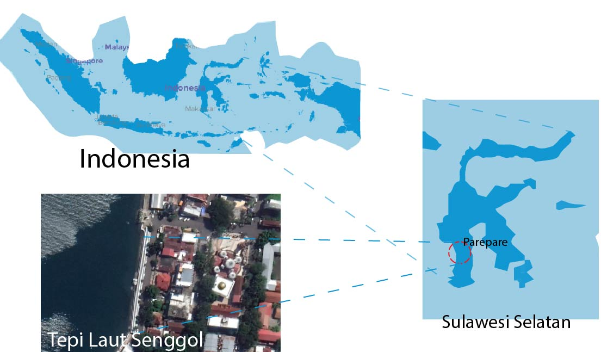
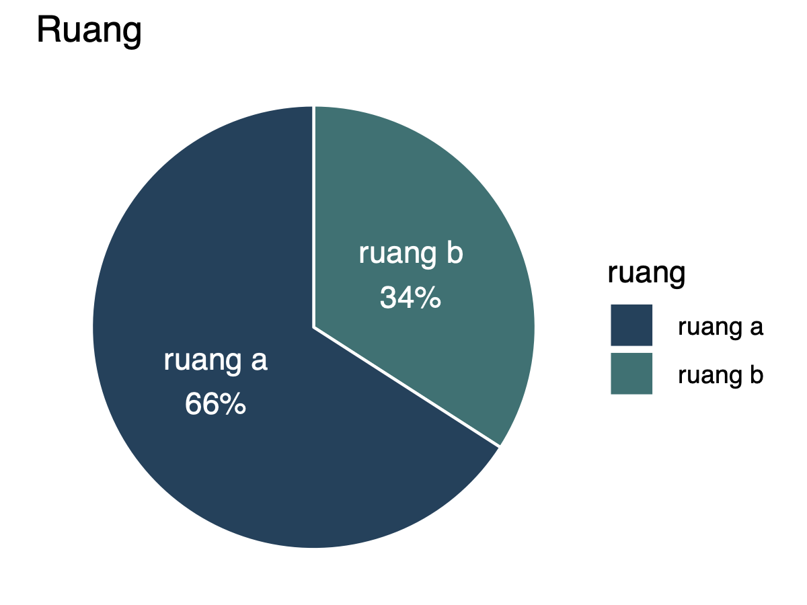
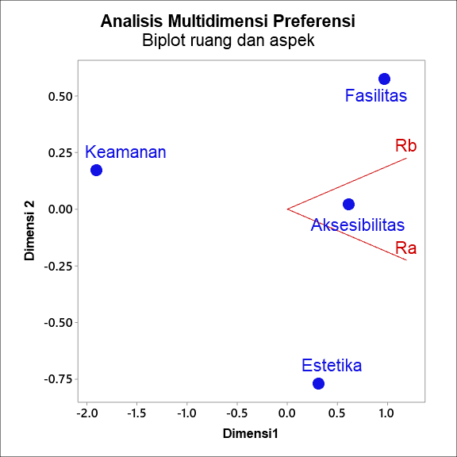
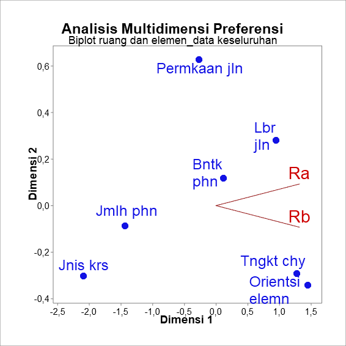

Tepi laut merupakan sebuah ruang perkotaan yang sangat memerlukan pengembangan
secara terus menerus (Shamsuddin, Abdul Latip, Ujang, Sulaiman, dan
Alias, 2013). Ruang ini mempunyai sejumlah karakteristik-karakteristik yang
unik oleh karena air merupakan sumber kehidupan (Yassin, Eves, dan
McDonagh, 2010). Pengembangan tepi laut yang sukses mempertimbangkan
sejumlah aspek yaitu keberagaman, interaksi komunitas, kenyamanan dan
keamanan, lingkungan dan keberlanjutan (Hussein, 2014). Pengembangan yang
sukses oleh tepi laut akan mengantarkan masyarakat menuju ke kawasan tepi laut
dari pusat kota (Hoyle, 2001).
Pembahasan terkait pengembangan tepi laut belakangan ini menjadi topik
yang hangat di Indonesia. Terdapat sejumlah pengembangan yang terjadi di
sejumlah daerah seperti proyek reklamasi di Makassar dan Manado (Andi,
Trisutomo, dan Ali, 2017; FHUH dan Aspan, 2017; Tungka, Omran, Gebril,
Wah, dan Suprapti, 2012), desain lanskap tepi laut di sungai Cikapundung
(Ainy, 2016), dan pengembangan ulang tepi laut pada tahun 1995 sepanjang 32 km
di Jakarta (Pramesti, 2017). Pengembagan tepi laut juga terjadi di kota Parepare,
salah satunya berada di tepi laut Senggol (Amanda, 2020).
Tepi laut senggol merupakan daya tarik wisata masyarakat kota Parepare
sejak lama. Orang-orang dapat menikmati pemandangan yang indah dan
ditemani dengan makanan-makanan khas pedagang kaki lima. Selain itu,
mereka juga dapat berenang di laut. Aktivitas-aktivitas tersebut yaitu
interaksi dengan air menjadi bagian terpenting dalam pengembangan tepi
laut (Davidowich, 1998). Eldeeb, Galil, dan Sarhan (2015) menambahkan
penggunaan beragam akan berkontribusi terhadap kesuksesssan sebuah tepi
laut.
Pada dasarnya, tepi laut merupakan sebuah ruang yang dapat meningkatkan
kualitas hidup seseorang dengan cara memenuhi kebutuhan masyarakat
(Kim, 2012). Untuk memenuhi kebutuhan tersebut secara efektif, maka pemangku
kebijakan dan perencana kota dalam mendesain ruang publik memerlukan
pemahaman preferensi terhadap ruang publik yang lebih baik (Madureira, Nunes,
Oliveira, dan Madureira, 2018). Preferensi terhadap ruang adalah ungkapan
keinginan seseorang terhadap suatu ruang (Zhang, 2006). Ungkapan keinginan ini
melekat atau ditimbulkan oleh sebuah elemen ruang perkotaan (Knox dan
Pinch, 2014). Menurut Alves et al. (2008), elemen ruang merupakan bagian fisik
dari sebuah ruang publik yang termasuk dalam tatanan ruang publik itu
sendiri.
Penelitian terkait preferensi pengunjung terhadap ruang publik di
sekitar kawasan tepi laut masih kurang. Hanya ada beberapa penelitian
yang membahas preferensi terhadap taman kota (Alves et al., 2008; Devy
Sandra, 2012; Dwiputra dan Ardiani, 2017; Madureira et al., 2018), taman
publik untuk umum (Grilli, Mohan, dan Curtis, 2020), dan ruang publik kampus
(Zhang, 2006). Sehingga penelitian ini diharapkan mampu melengkapi kekurangan
studi preferensi tersebut.
Beberapa tahun yang lalu, pengembangan tepi laut Senggol ini selesai.
Pengembangan ini menghasilkan dua jenis ruang yang berbeda. Untuk
memudahkan penelitian, peneliti menyebut ruang yang satu sebagai ruang
A, sedangkan ruang lainnya sebagai ruang B. Kedua ruang ini memiliki
sejumlah perbedaan baik dari segi elemen-elemen ruang, aktivitas, dan
lain-lain.
Ruang A lebih dikenal dengan tatanan dan elemen buatan yang mewah dan
lengkap. Sedangkan ruang B lebih dikenal dengan tatanan dan elemen yang
terlihat lebih alami dengan sedikit elemen buatan. Sehingga, kedua ruang ini
memunculkan kondisi yang kontras yang membuat orang berpeluang untuk
memilih satu ruang daripada lainnya. Kondisi ini dalam kurung waktu tertentu
akan menghasilkan ketidakselarasan dimana ruang satu akan terlihat lebih
berhasil dalam menarik pengunjung daripada ruang lainnya. Ketidakselaran
jumlah pengunjung yang mungkin terjadi ini akan membuat kawasan secara
keseluruhan tidak optimal (Puspitasari, Setioko, dan Pandelaki, 2015).
Menurut Madureira et al. (2018), pemahaman preferensi akan menjawab
permasalahan tersebut dengan cara menjelaskan kebutuhan-kebutuhan
pengunjung.
II Metode Penelitian
Penelitian ini bertujuan untuk menganalisis preferensi pengunjung terhadap ruang
di tepi laut Senggol. Tujuan tersebut dapat tercapai dengan menerapkan
pendekatan penelitian. Penelitian ini menerapkan pendekatan kualitatif dan
kuantitatif (mixed-method). Menurut Creswell dan Poth (2016), pendekatan
kualitatif merupakan gambaran keseluruhan dari sebuah fenomena yang diambil
dari pemahaman dan penglihatan secara langsung sebuah fenomena dalam objek
penelitian dengan sejumlah sumber yang tersedia. Dalam penelitian ini, fenomena
tersebut adalah kecenderungan pengunjung dalam memilih ruang. Sedangkan
pendekatan kuantitatif digunakan untuk meneliti populasi atau sampel
tertentu berdasarkan variabel penelitian. Lebih lanjut, untuk menilai frekuensi
munculnya variabel yang menarik di setiap ruang, maka penelitian ini
menerapkan desain analitik dengan pendekatan cross sectional sebagai analisis
data.
Penelitian ini berlokasi di kawasan tepi laut Senggol di Kota Parepare
yang terbentang dari pelabuhan Nusantara hingga Pasar Senggol (lihat
gambar 1). Penelitian ini dilaksanakan setiap hari pada jam 6 - 10 pagi
dan 6 - 9 malam karena pada waktu ini menunjukkan keramaian di objek
penelitian. Adapun pengumpulan data terbagi atas dua macam data yakni
data primer dan sekuder. Pertama, Data primer adalah data yang diambil
dari hasil kuesioner yang berdasarkan variabel penelitian. Terakhir, data
sekunder merupakan informasi yang telah tersedia oleh pihak atau instansi
lain.

Gambar 1 Lokasi Kota ParepareSumber: Dokumentasi, 2022
Penelitian ini menganalisis data dari hasil survei kuesioner terkait preferensi
pengunjung yang disertai dengan alasan memilih elemen-elemen yang disukai.
Sebelum menganalisis kedua data yang bersifat kualitatif dan kuantitatif, maka
peneliti melakukan reduksi data. Setelah itu, peneliti menganalisis data
berdasarkan kedua jenis data tersebut. Untuk data yang berjenis kualitatif seperti
kecenderungan dan deskripsi, peneliti mempelajari makna tema-tema yang
terdapat dalam teks responden. Hasil analisis ini menggambarkan data yang
dikategorisasikan sesuai dengan kriteria yang didapatkan. Untuk data yang berjenis
kuantitatif, peneliti memahami karakteristik setiap variabel dengan menggunakan
pendekatan cross-sectional. Hasilnya mengilustrasikan keragaman preferensi
terhadap ruang berdasarkan aspek dan elemen ruang serta latar belakang diantara
responden atau kelompok.
Kriteria pada penelitian ini terangkum dalam variabel penelitian.
Penelitian ini menggunakan variabel tunggal yang hanya memunculkan
variabel untuk di deskripsikan faktor atau unsur didalam setiap gejala dalam
variabel tersebut. Variabel penelitian secara detil dapat dilihat pada tabel
1.
Tabel 1 Variabel penelitian
Variabel
Sub-Variabel
Indikator
Aksesibilitas
Jumlah pohon
Sedikit pohon
Beberapa pohon
Bentuk pohon
Cukup rindang
Rindang
Lebar jalan
1-3m
Keamanan
3m
Permukaan jalan
Paving
Aspal
Tanah
Warna bunga/tanaman
satu atau dua warna
tiga atau lebih warna
Jenis kursi
Kursi bergerak
Kursi dinding
Estetika
Tingkat cahaya
Sedang
Tinggi
Orientasi elemen
Membelakangi laut
Menghadap laut
Tempat wisata air
Tempat memancing
Tempat berenang
Fasilitas
Bangunan penunjang
Stan
Kedai
Elemen air
Laut tenang
Laut berombang
III Hasil dan Pembahasan
Respon ruang yang disukai di kawasan tepi laut Senggol memiliki 85 total
responden. Dari 85 total responden tersebut, 66% (56) dari responden menyukai
ruang A dan 34% (29) dari responden menyukai ruang B (lihat gambar
2).

Gambar 2 Diagram Ruang
Selanjutnya, aspek-aspek ruang digunakan untuk menganalisis alasan yang
mendasari preferensi responden. Alasan tersebut dianalisis berdasarkan
aspek-aspek ruang (Definisi dan kata kunci kategori aspek dirangkum pada tabel 2
dan tabel 3). Dari total 85 responden itu, terdapat 150 total respon yang dibagi
berdasarkan kategori aspek ruang seperti: Aksesibilitas, Keamanan, Estetika dan
Fasilitas. Oleh karena itu, kata kunci dari setiap kategori jawaban responden
(respon) dicocokkan dengan deskripsi dan frekuensi kemunculan di setiap kategori
dihitung.
Tabel 3 Kategori Analisis Jawaban Responden dengan Sub-kategori Aspek seperti
yang Dideskripsikan oleh Responden
Kategori Aspek
Kata kunci
Aksesibilitas
Terbuka, Tertata, Bebas, Lapang
Keamanan
Aman, Tanpa rasa takut
Estetika
Indah, Bersih, Mewah, Menarik
Fasilitas
Makan, Berkumpul, Duduk, Nyaman
Hasilnya menunjukkan bahwa pertama, kata seperti “terbuka, lapang,
tertata" sering diucapkan pada kategori aspek aksesibilitas. Kedua, kata seperti
“bersih, indah, mewah, dan menarik" sering muncul pada kategori aspek estetika.
Ketiga, kata seperti “tidak takut, dan aman" menjadi buah perbincangan pada
aspek keamanan. Terkahir, kata seperti “makan, duduk dan berkumpul" sering
diulangi pada aspek fasilitas. Kata-kata tersebut terpilah dalam sebuah sub
kategori aspek pada tabel 3.
Sedangkan untuk frekuensi hasilnya menunjukkan bahwa dari aspek fasilitas,
orang menyukai sebuah ruang yang nyaman. Dari aspek aksesibilitas, orang
menyukai sebuah ruang yang luas. Alasannya orang dapat memaksimalkan
pemanfaatan ruang tersebut.
Dari total 150 respon dari 85 responden terkait alasan menyukai ruang
tertentu, 54%-58% (46-50) respon menunjukkan alasannya menyukai ruang karena
aspek estetika, aksesibilitas dan fasilitas. Sedangkan hanya ada 8% (7)
respon yang beralasan aspek keamanan dalam menyukai ruang (lihat tabel
4).
Tabel 4 Frekuensi aspek
Aspek
Frek
Pct.Resp
Pct.Kasus
aksesibilitas
47
31.33
55.29
keamanan
7
4.67
8.24
estetika
46
30.67
54.12
fasilitas
50
33.33
58.82
total
150
100
176.47
sumber: Analisis,2022
Selanjutnya, respon tersebut digolongkan berdasarkan macam-macam
ruang yakni ruang A dan B. Hasilnya 25% (37) responden memilih aspek
estetika sebagai alasan menyukai ruang A dibandingkan dengan 20% (30)
memilih aspek fasilitas dan 21%(32) aspek aksesibilitas. Sementara, 13% (20)
responden memilih aspek fasilitas dalam menyukai ruang B dibandingkan
dengan 10%(15) responden memilih aspek aksesibilitas dan 6% (9) memilih
aspek estetika. Meskipun demikian, terdapat preferensi yang signifikan
terhadap aspek fasilitas pada kedua ruang. Sebaliknya, aspek keamanan
hanya dipilih sebagian kecil responden. Hasil ini dapat dilihat pada tabel
5.
Tabel 5 Crosstabulasi 2 ruang dan aspek
Aksesibili-tas
Keamanan
Estetika
Fasilitas
Total
Ruang A
32 (21%)
5 (3%)
37 (25%)
30 (20%)
104 (69%)
Ruang B
15 (10%)
2 (2%)
9 (6%)
20 (13%)
46 (31%)
Total
47 (31%)
7 (5%)
46 (31%)
50 (33%)
150 (100%)
Sumber: Analisis, 2022
Hasil pada tabel crosstabulasi 5 kemudian digambarkan menggunakan teknik
biplot untuk memahami keragaman respon aspek dan ruang. Hasilnya
menunjukkan bahwa aspek aksesibilitas memiliki kontribusi besar untuk preferensi
terhadap kedua ruang (lihat gambar 3).

Gambar 3 Keragaman Preferensi terhadap Aspek dari setiap ruangSumber: Analisis, 2022
Untuk aspek aksesibilitas pada ruang A, respon dari kebanyakan
responden menunjukkan bahwa kata-kata seperti “ terbuka", “tertata", dan
“lapang" sering disebutkan. Ruang A sendiri mempunyai tempat terbuka dan
tertutup. Selain itu, terdapat pula jalan pedestrian yang cukup lebar dengan
penataan perabot yang tersusun cukup baik. Jalan pedestrian pada ruang
ini dilindungi dengan kanopi sehingga membuat pejalan kaki terhindar
dari terik matahari. Respon terhadap kondisi ruang A berkaitan dengan
aspek aksesibilitas teruraikan dalam sejumlah penggalan kalimat berikut
ini:
“Ruang ini memberi kesan lapang tapi tetap memiliki estetika
sehingga membuat kita menjadi nyaman ketika berada di ruang
tersebut."
“Ruang ini terlihat lebih rapi, pedestrian yang lumayan luas
dan tidak banyak kendaraan yang berlalu lalang."
“Ruangan ini memiliki jalan, sungai, dan tidak ada
berjejeran motor. Jadi saya bisa berjalan disana dan melihat
pemandangan tanpa ada rasa takut."
Sementara untuk aspek aksesibilitas pada ruang B, respon menunjukkan
bahwa kata-kata seperti “terbuka", “bebas", dan “humanis" banyak muncul pada
respon. Ruang B hanya bersifat terbuka, tidak memiliki tempat yang tertutup.
Meskipun demikian, itu menjadi alasan orang untuk dapat melihat jalan yang
terbuka dan bisa melihat orang yang sedang beraktivitas. Pengunjung menjawab
dengan macam-macam pendapat mengenai alasan memilih ruang B terkait dengan
aspek aksesibilitas , beberapa diantaranya sebagai berikut:
“Ruang terbuka dengan desain yang lebih humanis."
“Ruang ini bisa kita melihat jalan yang terbuka dan bisa lihat
orang yang sedang beraktivitas."
“Bisa pilih-pilih makanan sesuai selera dan bisa berjalan
dengan puas."
Untuk aspek estetika pada ruang A, respon banyak mengungkapkan
kata-kata seperti “indah", “bersih", dan “mewah". Ruang A jelas memiliki sejumlah
elemen-elemen yang sangat mewah dan menarik dengan jumlah yang cukup
banyak. Seperti contoh: lampu jalan, meja, dan keramik. Elemen-elemen tersebut
tentunya menambah pengalaman estetika seseorang. Adapun sejumlah respon yang
memilih ruang A karena estetika sebagai berikut:
“Bisa menikmati laut lepas jauh dan menghilangkan penat..."
“Karena bersih, rapi dan memiliki pemandangan yang
indah."
“Lebih representatif dan nyaman tidak terkesan kumuh dan
jorok."
Respon terkait aspek estetika juga memiliki kontribusi terhadap ruang B.
Pada ruang B, orang dapat menikmati pemandangan orang berenang.Menurut
MUMCU dan YILMAZ (2016), orang menyukai pemandangan aktivitas orang
seperti berenang. Berikut deskripsi respon responden terhadap ruang B karena
estetika.
“Ruang terbuka dengan desain yang lebih humanis."
“Ruang ini bisa kita melihat jalan yang terbuka dan bisa lihat
orang yang sedang beraktivitas."
“Bisa pilih-pilih makanan sesuai selera dan bisa berjalan
dengan puas."
Untuk aspek fasilitas, responden menunjukan respon lebih besar
terhadap ruang A. Mereka mendeskripsikan dengan kata-kata seperti “Makan",
“Berkumpul", “Duduk". Wajar saja apabila terdapat fasilitas kedai makanan dan
tempat duduk yang tertata. Adapun respon yang paling mewakili aspek fasilitas
sebagai alasan memilih ruang A, sebagai berikut:
“Kelihatan lebih bersih dan rapi jadi enak buat saya santai
santai duduk."
“Ruang ini memiliki tempat rekreasi dan refreshing sekaligus
memberdayakan pedagang kaki lima yang sebelumnya tidak teratur
sekarang menjadi bagus indah dan menyenangkan."
“Ruang ini dapat digunakan oleh keluarga untuk menikmati
indahnya view pantai sambil menikmati sajian makanan sesuai
pesanan."
Meskipun aspek fasilitas lebih besar pada ruang A, ruang B juga
menunjukkan adanya kontribusi. Kata-kata yang sering muncul pada deskripsi
respon ini adalah “Berkumpul", “Makan", dan “Melihat". Adapun sejumlah
potongan deskripsi respon yang memilih ruang B karena aspek fasilitasnya:
“Tempatnya bagus untuk kumpul-kumpul dengan keluarga
atau teman dll, pemandangan yang bagus."
“Karena ruangan B adalah ruangan yang cocok untuk
berlibur bersama keluarga dengan makan sambil duduk disamping
pantai dengan keramaian."
“Karena bisa menikmati suasana pantai."
Selanjutnya, penelitian ini memberikan pilihan jenis-jenis elemen yang
disediakan berdasarkan variabel penelitian (tabel 1). Tujuannya untuk memahami
apa saja elemen sehingga pengunjung memilih ruang tertentu. Responden
meluangkan waktunya untuk memikirkan sejumlah elemen yang mereka sukai.
Elemen-elemen yang mereka sukai selanjutnya dicatat.
Hasil penelitian ini menggambarkan bahwa responden sangat menyukai
elemen jalan yang lebar. Sama dengan temuan-temuan sebelumnya bahwa orang
mempertimbangkan aksesibilitas pada suatu ruang publik.
Dari hasil elemen-elemen yang disukai responden, terdapat 267 total respon.
Selanjutnya respon tersebut digolongkan berdasarkan macam-macam ruang yang
terdiri dari ruang A dan B. Hanya respon yang memiliki jumlah disukai yang relatif
cukup besar akan ditampilkan pada tabel.
Pada ruang A, responden lebih menyukai lebar jalan dengan lebar
tiga meter sebanyak 13% (35) responden dibandingkan dengan responden
yang menyukai beberapa pohon, permukaan aspal, permukaan keramik,
pencahayaan tinggi dan elemen yang menghadap laut sebanyak 4% (10) - 11%
(29) responden. Sementara yang menyukai elemen lainnya hanya sebesar
kurang dari 3% (8). Pada ruang B, responden lebih menyukai ruang dengan
pencahayaan yang cukup sebesar 4%(11) responden dibandingkan dengan
responden yang menyukai pohon yang cukup rindang sebanyak 1%(4).
Sementara yang menyukai elemen lainnya berkisar dibawah 1% (3), lihat tabel
6.
Tabel 6 Crosstabulasi 2 ruang dan elemen
Ruang a
Ruang b
Total
Jumlah
pohon
Sedikit pohon
6 (2%)
3 (1%)
9(3%)
Beberapa pohon
10 (4%)
1
11 (4%)
Bentuk
pohon
Cukup rindang
2 (1%)
4 (1%)
6(2%)
Sangat rindang
28 (10%)
6 (2%)
34(13%)
Lebar
jalan
1-3m
3 (1%)
6 (2%)
9(3%)
> 3m
35 (13%)
7 (3%)
42(16%)
Permukaan
jalan
Paving
7 (3%)
4 (1%)
11(4%)
Aspal
12(4%)
1
13(5%)
Keramik
12(4%)
1
13(5%)
Jenis
kursi
kursi bergerak
6(2%)
0
6(2%)
kursi dinding
3(1%)
2(1%)
5(2%)
Tingkat
cahaya
pencahayaan cukup
5 (2%)
11(4%)
16(6%)
pencahayaan tinggi
31 (12%)
6 (2%)
37(14%)
Orientasi
elemen
membelakangi laut
8(3%)
3 (1%)
11(4%)
menghadap laut
29 (11%)
15 (6%)
44(16%)
Total
197 (74%)
70 (26%)
267 (100%)
Sumber: Analisis, 2022
Pada tahap selanjutnya, elemen yang ada pada tabel 6 dikelompokkan
menjadi 7 jenis elemen: Jumlah pohon, Bentuk pohon, Lebar jalan, Permukaan
jalan, Jenis kursi, Tingkat cahaya, dan Orientasi elemen (lihat tabel 7). Hasil
respon elemen yang paling disukai ini selanjutnya digambarkan melalui teknik
biplot untuk menerangkan keragaman preferensi terhadap elemen (lihat gambar
4).
Hasil menunjukkan terdapat perbedaan keragaman preferensi pada
kedua ruang. Kontribusi terhadap ruang A lebih dominan ditunjukkan oleh
jenis elemen bentuk pohon, lebar jalan, dan permukaan jalan. Sedangkan
kontribusi terhadap ruang B lebih ditunjukkan oleh jenis elemen seperti
tingkat cahaya dan orientasi elemen. Ruang A memiliki 4 meter lebar jalan
yang mengizinkan pengunjung untuk mengakses ruang dengan mudah.
Selain lebar jalan, permukaan jalan ruang ini diselimuti dengan susunan
keramik yang apik. Ruang B tidak memiliki lebar jalan memadai alih-alih
menggunakan bahu jalan sebagai pedestrian. Meskipun demikian, bahu jalan
juga digunakan sebagai tempat parkir kendaraan. Lebih lanjut, ruang ini
memiliki pemandangan teluk, orang berenang dan memancing. Kebanyakan
dari mereka hanya menikmati pemandangan tersebut daripada berenang.
Ruang ini menunjukkan korelasi yang cukup tinggi terlihat pada gambar
4.

Gambar 4 Keragaman Preferensi terhadap elemen dari setiap ruangSumber: Analisis, 2022
Tabel 7 Cross tabulasi ruang*kelompok elemen
Ruang a
Ruang b
Total
Jumlah pohon
16 (6%)
4 (1%)
20 (7%)
Bentuk pohon
30 (11%)
10 (4%)
40 (15%)
Lebar jalan
38 (14%)
13 (5%)
51 (19%)
Permukaan jalan
31 (12%)
6 (2%)
37 (14%)
Jenis kursi
9 (3%)
2 (1%)
11 (4%)
Tingkat cahaya
36 (13%)
17 (6%)
53 (20%)
Orientasi elemen
37 (14%)
18 (7%)
55 (21%)
Total
197 (74%)
70 (26%)
267 (100%)
Sumber: Analisis, 2022
IV Kesimpulan
Dari hasil analisis yang telah dilakukan disimpulkan bahwa pengunjung menyukai
ruang A. Ruang ini terkenal dengan elemen binaan seperti lampu jalan,
permukaan keramik, dan bangunan yang terpelihara. Hasil ini berbeda dengan
penemuan dari Zhang (2006). Zhang (2006) menemukan bahwa preferensi
paling tinggi adalah ruang yang alami daripada ruang binaan. Oleh sebab
itu, perbaikan dan peningkatan elemen buatan harus dipertimbangkan
sebagai isu yang penting untuk desain dan pengelolaan ruang di tepi laut
perkotaan. Orang pada ruang A lebih menyukai aspek fasilitas dan elemen
dari kelompok lebar jalan. Sedangkan responden pada ruang B juga lebih
menyukai aspek fasilitas, namun menyukai elemen dari kelompok orientasi
elemen.
Pustaka
Ainy, C. (2016). Landscape Design for Sustainable Waterfront Community.
JAILCD, 6.
Alves, S., Aspinall, P. A., Thompson, C. W., Sugiyama, T., Brice, R., dan
Vickers, A. (2008). Preferences of older people for environmental attributes
of local parks. Facilities.
Amanda, T. A. (2020). Strategi pengembangan pariwisata di kota parepare
oleh dinas olahraga pemuda dan pariwisata kota parepare (Unpublished
doctoral dissertation). Universitas Hasanuddin.
Andi, Y., Trisutomo, S., dan Ali, M. (2017, October). Model reklamasi pantai
secara berkelanjutan kasus : Pantai kota makassar. TATALOKA, 19(4), 339.
doi: 10.14710/tataloka.19.4.339-354
Carmona, M., Heath, T., Oc, T., dan Tiesdell, S. (2003). Public Space–Urban
space, the dimention of urban design. Edisi, 2, 114.
Carr, S., Stephen, C., Francis, M., Rivlin, L. G., dan Stone, A. M. (1992).
Public space. Cambridge University Press.
Creswell, J. W., dan Poth, C. N. (2016). Qualitative inquiry and research
design: Choosing among five approaches. Sage publications.
Davidowich, D. M. (1998). Assessment of recreation space along the Hudson
river waterfront in Jersey City, NJ (Department of Humanities and Social
Sciences). New Jersey Institute of Technology, New Jersey.
Devy Sandra. (2012). Preferensi Masyarakat Terhadap Ketersediaan Taman
Kota di Kota Pekanbaru-Propinsi Riau (Unpublished doctoral dissertation).
Sekolah Pascasarjana Institut Pertanian Bogor, Bogor.
Dwiputra, I. D., dan Ardiani, N. A. (2017). Preferensi masyarakat dalam
memilih karakteristik taman kota berdasarkan motivasi kegiatan. Prosiding
Temu Ilmiah IPLBI, 6, 061–066.
Eldeeb, S. S., Galil, R. A., dan Sarhan, A. E. (2015). A sustainability
assessment framework for waterfront communities. Renewable Energy and
Sustainable Development, 1(1), 167–183.
FHUH, dan Aspan, Z. (2017, April). Tinjauan yuridis izin reklamasi pantai
makassar dalam mega proyek centre point of indonesia. Bina Hukum
Lingkungan, 1(2), 172–189. doi: 10.24970/jbhl.v1n2.14
Grilli, G., Mohan, G., dan Curtis, J. (2020). Public park attributes, park
visits, and associated health status. Landscape and urban planning, 199,
103814.
Hoyle, B. (2001). Lamu: Waterfront revitalization in an East African port-city.
Cities (London, England), 18(5), 297–313.
Hradilová, I., et al. (2013). Influence of urban waterfront appearance on
public space functions. Acta Universitatis Agriculturae et Silviculturae
Mendelianae Brunensis, 60(8), 261–268.
Hussein, R. (2014). Sustainable urban waterfronts using sustainability
assessment rating system. International Journal of Architectural and
Environmental Engineering, 8(4), 488–498.
Kim, H. J. (2012). Researching Indoor Public Space Attributes: Enhancing the
Interaction between Older Adults and Children (Unpublished doctoral
dissertation). North Carolina State University, Ann Arbor.
Knox, P., dan Pinch, S. (2014). Urban social geography: An introduction.
Routledge.
La Rosa, D., Takatori, C., Shimizu, H., dan Privitera, R. (2018). A planning
framework to evaluate demands and preferences by different social groups for
accessibility to urban greenspaces. Sustainable Cities and Society, 36,
346–362. doi: 10.1016/j.scs.2017.10.026
Madureira, H., Nunes, F., Oliveira, J., dan Madureira, T. (2018, February).
Preferences for Urban Green Space Characteristics: A Comparative
Study in Three Portuguese Cities. Environments, 5(2), 23. doi: 10.3390/environments5020023
MUMCU, S., dan YILMAZ, S. (2016). Seating furniture in open spaces and
their contribution to the social life. Environmental Sustainability and
Landscape Management, 169.
Pramesti, R. E. (2017). Sustainable Urban Waterfront Redevelopment :
Challenge and Key Issues. Jurnal Arsitektur dan Perencanaan Kota, 14,
14.
Puspitasari, R. A., Setioko, B., dan Pandelaki, E. E. (2015). Persepsi
integrasi tata guna lahan pada kawasan waterfront development (studi kasus:
Kanal banjir barat semarang). Teknik, 36(1), 17–23.
Shamsuddin, S., Abdul Latip, N. S., Ujang, N., Sulaiman, A. B., dan Alias,
N. A. (2013). How a city lost its waterfront: Tracing the effects of policies
on the sustainability of the Kuala Lumpur waterfront as a public
place. Journal of Environmental Planning and Management, 56(3),
378–397.
Tungka, A. E., Omran, A. A., Gebril, A. O., Wah, W. S., dan Suprapti,
A. B. (2012). Manado Waterfront Development Concept as Sustainable City
of Tourism. Bulletin of engeneering, 6.
Yassin, A. B. M., Eves, C., dan McDonagh, J. (2010). An evolution
of waterfront development in Malaysia. In Proceedings of the 16th
annual conference of the pacific rim real estate society, wellington, new
zealand (pp. 24–27).
Zhang, Y. (2006). A landscape preference study of campus open space.
Mississippi State University.

 Bentuk pohon
Bentuk pohon Lebar jalan
Lebar jalan
 Permukaan jalan
Permukaan jalan Warna bunga/tanaman
Warna bunga/tanaman Jenis kursi
Jenis kursi
 Tingkat cahaya
Tingkat cahaya Orientasi elemen
Orientasi elemen Tempat wisata air
Tempat wisata air
 Bangunan penunjang
Bangunan penunjang Elemen air
Elemen air